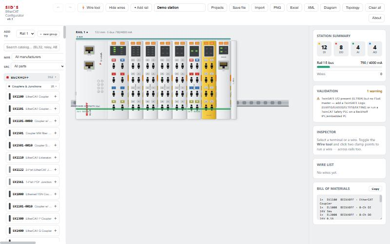
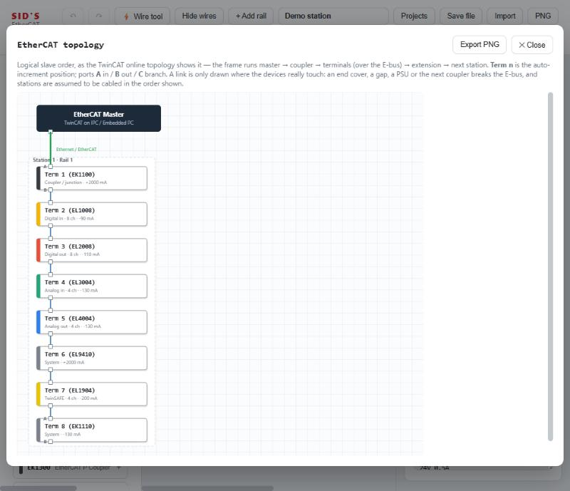

A single-file, offline web app for visually laying out Beckhoff EtherCAT stations and multi-vendor control panels — place devices, wire them with automatic cable selection, validate the design, and export a bill of materials, a wiring diagram, and a TwinCAT-style device list.
Runs entirely in your browser — nothing is uploaded. Design aid, not an engineering tool.
Specifying an EtherCAT station means holding a lot of constraints in your head at once: how much current the E-bus can supply, which potential group a terminal sits in, whether a power supply is sized for the load, whether two connectors can legally be wired together at all. Get one wrong and it surfaces on the shop floor, not at the desk.
This tool moves those checks earlier. You build the panel visually, the wiring rules are enforced as you go, and the validator flags budget and structure problems before anything is ordered. Then it produces the paperwork — BOM, wiring diagram, device list — straight from the model.
It is deliberately one HTML file. No install, no server, no account — the kind of constraint that matters on a locked-down engineering workstation.

PANELTerminals drawn to scale, with live station summary, validation and BOM.

TOPOLOGYSlave order as the TwinCAT online view shows it, linked only where devices touch.
About 660 parts are hand-curated across 22 manufacturers — couplers, embedded and industrial PCs, panels, drives and motors, the full Beckhoff EL/EP terminal families, plus sensors, contactors and breakers, disconnects, power supplies, distribution, safety devices, pneumatics, IP67 I/O and IO-Link masters.
The other 893 come from the EtherCAT Technology Group product guide — identification data only: company, product name, listing category and certification listing, with a link back to the guide. That is what takes the catalog to roughly 1,550 parts across 281 manufacturers.
The UI, geometry, device faces, wiring and exports live in a single React component tree; the parts catalog is split out so the core stays readable, with bulk entries generated from an ETG product CSV by a Python script.
This is a design-aid and learning tool, not an engineering or procurement system. Beckhoff data is the most accurate and was checked against public documentation; other hand-curated parts are representative model families with approximate electrical specs; ETG product-guide entries are the loosest, since the guide carries no electrical data, so their sizes, channel counts and pinouts are representative defaults per product type. Component drawings are original stylized SVG, not renders of specific products. Verify against the manufacturer's datasheet before using any of it for real design, ordering or installation.
The MIT licence covers the source and original artwork only. Beckhoff, EtherCAT, EtherCAT P, Safety over EtherCAT, TwinCAT and TwinSAFE, and every other company and product name in the catalog, are trademarks of their respective owners, used for identification only. EtherCAT® is a registered trademark and patented technology licensed by Beckhoff Automation GmbH. ETG product-guide listings are submitted by member companies; ETG takes no responsibility for their content and the guide is incomplete. This project is independent and is not affiliated with, authorized, endorsed or sponsored by Beckhoff Automation, the EtherCAT Technology Group, or any other company named in it.